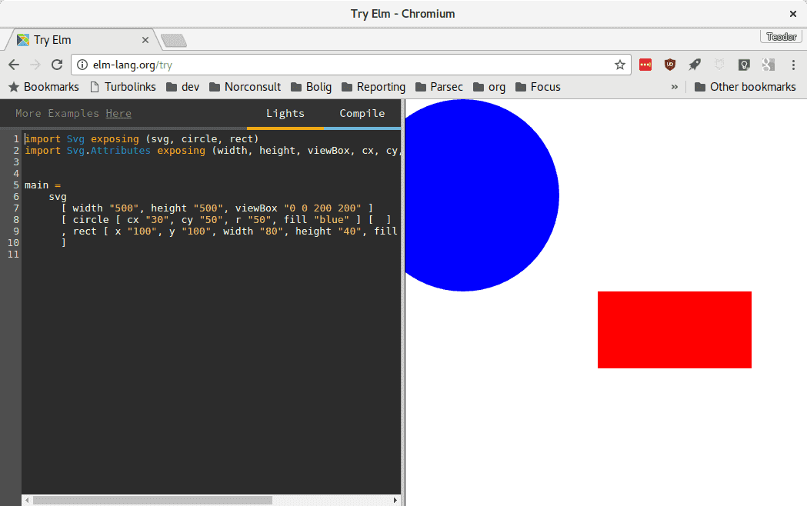
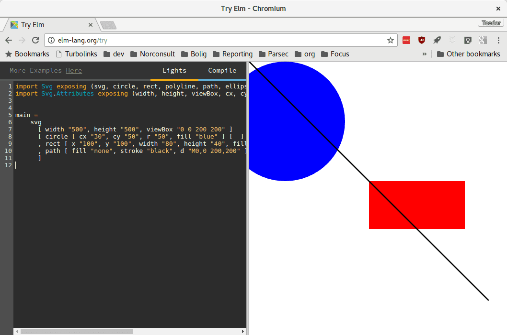
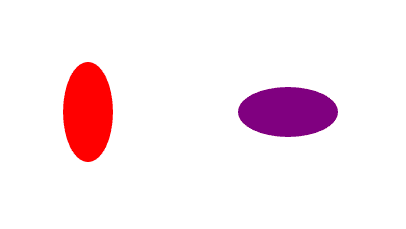
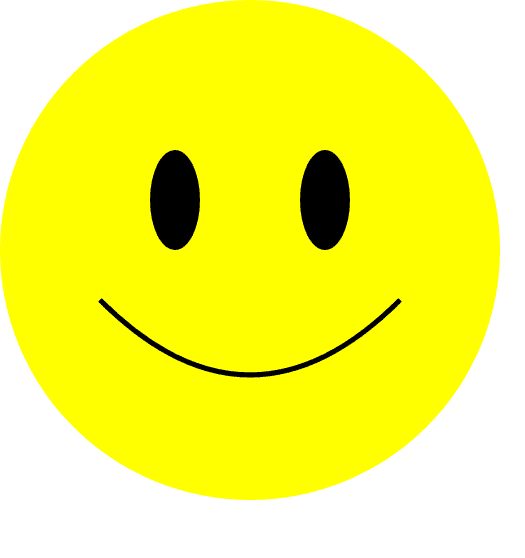

import Svg exposing (svg, circle, rect)
import Svg.Attributes exposing (width, height, viewBox, cx, cy, r, fill, x, y, width, height)
main =
svg
[ width "500", height "500", viewBox "0 0 200 200" ]
[ circle [ cx "30", cy "50", r "50", fill "blue" ] [ ]
, rect [ x "100", y "100", width "80", height "40", fill "red" ] - [ ]
]
Da skal du se noe slikt:

La oss plukke koden fra hverandre.
Jeg kjører lokalt, og får feil!
Hvis du prøver å kjøre lokalt, får du denne beskjeden fra Elm:
Starting downloads...
● elm-lang/html 2.0.0
● elm-lang/virtual-dom 2.0.4
● elm-lang/core 5.1.1
Packages configured successfully!
I cannot find module 'Svg'.
Module 'Main' is trying to import it.
Potential problems could be:
* Misspelled the module name
* Need to add a source directory or new dependency to elm-package.json
Da må vi installere pakken svg.
Hvis jeg har en mappe på skrivebordet mitt som heter Elm, skal jeg se
følgende: C:\Users\teodor\Desktop\Elm>
Fungerer det nå?
Importere moduler
Tidligere har vi brukt pakken Html og importert funksjoner som p for
avsnitt og h1 for overskrifter.
-- fra noe sånt:
[ circle -- ...
, rect -- ...
]
-- til noe sånt:
[ rect -- ...
, circle -- ...
]
Steg 2: kurver
En kurve ("path" på engelsk), er en rett eller myk strek mellom flere punkter. Vi
kan tegne både rette kurver og myke kurver.
En linje går mellom to punkter. Vi skal ha noe som går mellom mange punkter!
Importere funksjoner for å tegne kurve
Hvordan å importere funksjoner fra moduler
I Elm bygger vi opp funksjoner. Vi kan importere en modul, og bruke funksjoner
fra modulen:
import Html
main = Html.text "Hello!"
Vi kan også importere funksjoner direkte fra en modul:
import Html exposing (text)
main = text "Hello!"
For å importere mange funksjoner fra samme modul, legger vi komma mellom
funksjonene:
import Html exposing (text, h1, p, ul, li)
-- ...
Tegne skråstrek
[circle [ -- ...
, rect [ -- ...
, path [ fill "none", stroke "black", d "M0,0 200,200" ] []
Min ser nå slik ut:

Steg 3: tegne smiley
Nå skal vi lage et smilefjes!
Det er lurt å begynne på nytt i dette steget. Da kan du åpne en ny fane med
Try Elm eller lage en ny elm-fil.
Pass på at du får med deg funksjonene du trenger når du gjør oppgavene under!
Vi starter med å lage oss et koordinatsystem der x og y er mellom 0 og 100.
Sirkler
main =
svg
[ width "500", height "500", viewBox "0 0 100 100" ]
[ -- Ingen elementer ennå!
]
Så fyller vi dette med en stor, gul sirkel.
main =
svg
[ width "500", height "500", viewBox "0 0 100 100" ]
[ circle [ cx "5", cy "5", r "5", fill "yellow" ] - [ ]
]
Ånei! Den var ikke stor!
Bezierkurver
Bezierkurve! Det var et rart navn.
Vi bruker ofte bezierkurver når vi vil ha en myk kurve. Det finnes
forskjellige typer bezierkurver:
Navn på norsk
Navn på engelsk
Nøkkel
Forklaring
Lineær kurve
Linear curve
L
Rett strek mellom to punkter ("linje")
Kvadratisk kurve
Quadratic curve
Q
Myk strek mellom tre punkter ("kvadrat")
Kubisk kurve
Cubic curve
C
Myk strek mellom fire punkter ("kube")
En munn som bezierkurve
Her er en path med bezierkurve i Elm:
path [ fill "none", stroke "black", d "M20,60 C 40,50 60,50 80,60 " ] []
I strengen "M20,60 C 40,50 60,50 80,60 " dukker det opp to mystiske variabler.
C står for "Cubic", og M står for "Move to"; begynn her.
Ånei! Det ble et surt fjes!
Ellipser
Her er to ellipser:

En sirkel har lik høyde og bredde. En ellipse kan være flat eller tynn; den kan
ha forskjellig radius i x- og y-retning.
Her er Elm-koden som lager den røde ellipsen:
ellipse [ cx "30", cy "40", rx "5", ry "10", fill "red" ] - [ ]
Og denne lager den lilla ellipsen:
ellipse [ cx "70", cy "40", rx "10", ry "5", fill "purple" ] - [ ]
Du finner ellipse i Svg, og cx og cy i Svg.Attributes.
Øyne som ellipser
Her er sånn min ble seende ut:

path [ fill "red", stroke "black", d "M20,60 C 40,80 60,80 80,60 " ] []
circle [ cx "50", cy "50", r "50", stroke "black", fill "yellow" ] - [ ]
Svg inne i et Html-dokument
Det går an å skrive Svg inne i et Html-dokument. Her er et eksempel:
import Svg exposing (svg, circle, rect)
import Svg.Attributes exposing (width, height, viewBox, cx, cy, r, fill, x, y, width, height)
import Html exposing (text, div, h1, p)
main =
div []
[ h1 [] [text "Mine figurer!"]
, svg
[ width "500", height "500", viewBox "0 0 200 200" ]
[ circle [ cx "30", cy "50", r "50", fill "blue" ] [ ]
, rect [ x "100", y "100", width "80", height "40", fill "red" ] - [ ]
]
, p [] [text "Her har jeg tegnet en firkant og en sirkel!"]
]
Tegne på din egen nettside
Forbedre denne siden
Funnet en feil? Kunne noe vært bedre? Hvis ja, vennligst gi oss tilbakemelding ved å lage en sak på Github eller fiks feilen selv om du kan. Vi er takknemlige for enhver tilbakemelding!